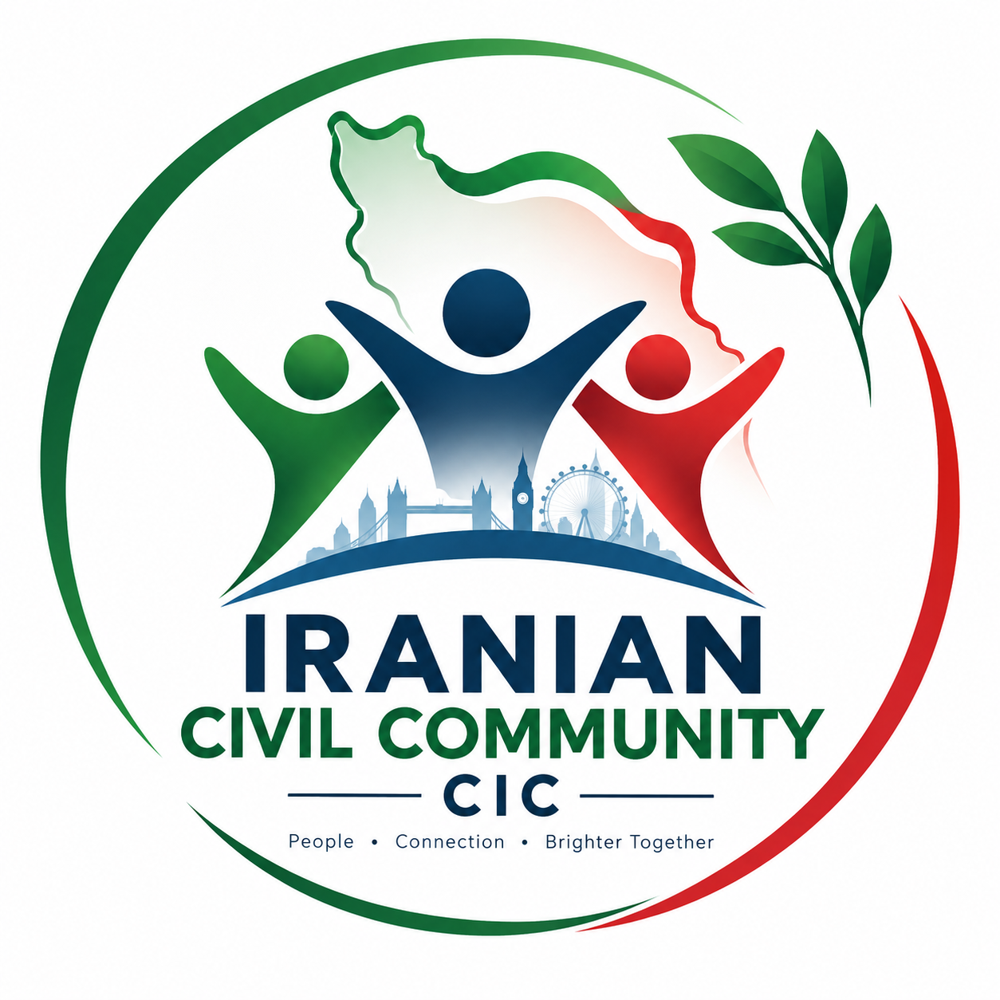

پرش به محتوای اصلی

جامعه مدنی ایرانیان
مردم • پیوند • با هم روشنتر
EN
فا
ICCC
خانه
درباره ما
معرفی مجموعه
فعالیتهای ما
ثبت و ساختار
حمایت
درخواست حمایت
امنیت و حریم خصوصی
همراهی
ثبتنام داوطلب
همکاری با ما
تماس
راههای تماس
ارسال پیام
درخواست حمایت
نتایج جستجو